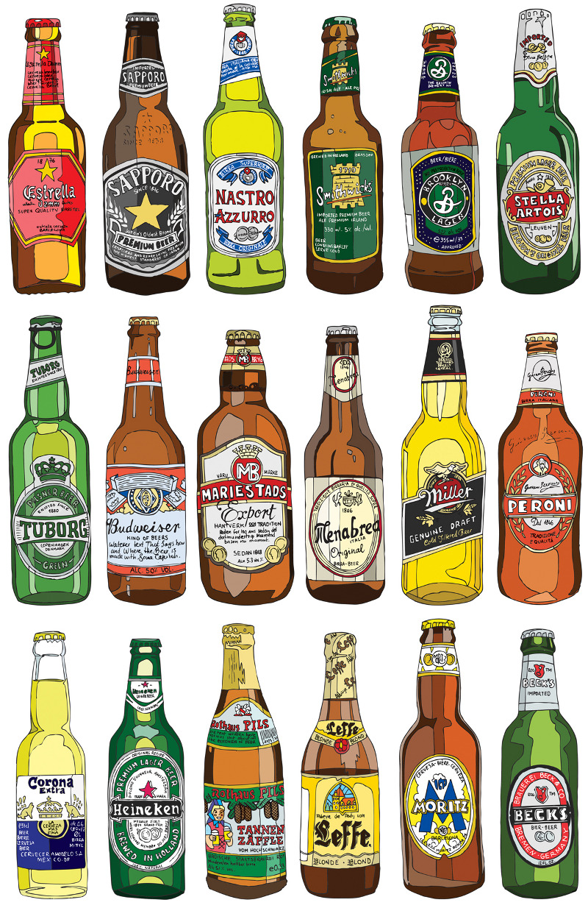

| Plenty of Beers | |
|---|---|
| Beer is an alcoholic beverage produced by the saccharification of starch and fermentation of the resulting sugar. The starch and saccharification enzymes are often derived from malted cereal grains, most commonly malted barley and malted wheat.Most beer is also flavoured with hops, which add bitterness and act as a natural preservative, though other flavourings such as herbs or fruit may occasionally be included. The preparation of beer is called brewing. |  |